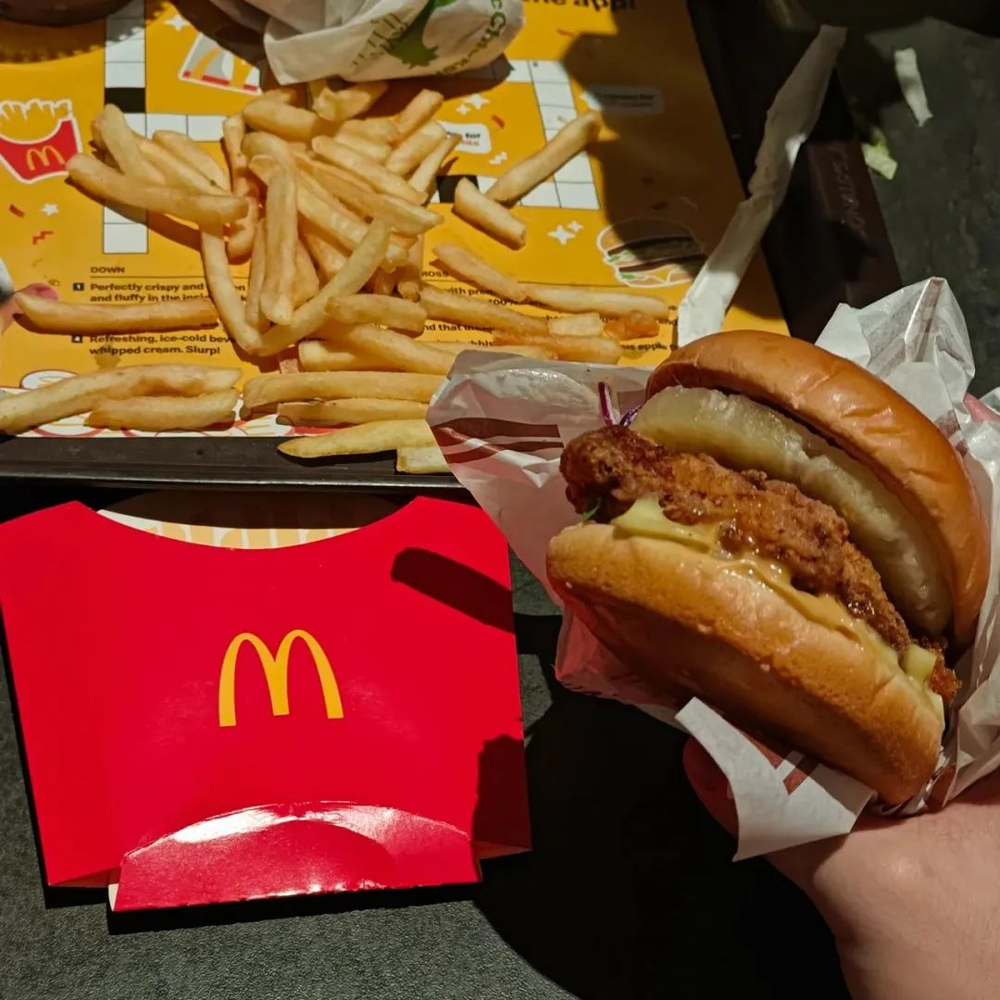
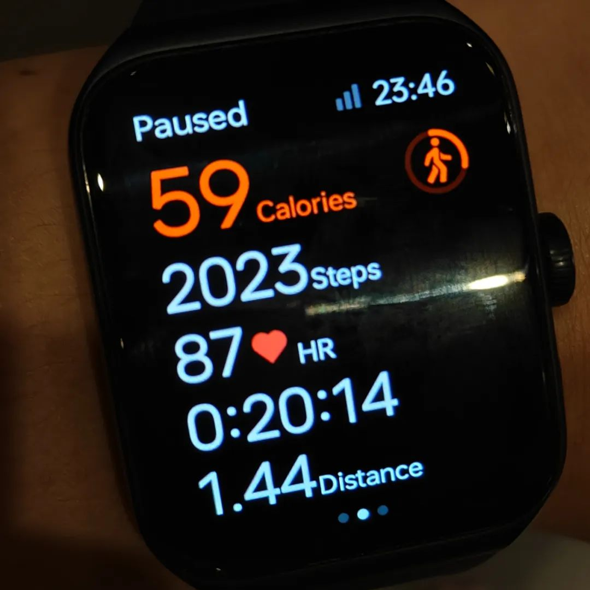

共计1020个字，2张图
前两天和人开玩笑，说：现在的博士生进高校很简单啊，指不定哪一天就可以直接去走教职了，而且是定向到医学院的。医学生进去临床的开始，不仅要对你鞠躬，有时候还会带花来让你上一下某地开学季的头条。你的名字叫：大体老师。
大体差不多就行了。别整些有的没的。凑合凑合过
想吃双层麦辣鸡腿堡。想是这么想，实际上返校半个月了也没吃过一次。就像想去大兴安岭的林子里快乐I人，实际上看了不知道多少次票，路线也写好了。显然没顺遂过。
大象席地而作不得声。
牙克石到满归的这条线，看来看去。有人每天生活在其他人想要生活在的地方。除了最多人共同的终点之外，其他人期待的只不过是和原来生活的一词反差罢。
卷不了一点也学不了一点。
甘源的香辣味青豆有股芥末味。不要买。也可能是麻辣，早知道是麻辣我就不吃了，骂骂咧咧。这个麻辣味一股不够精细的合成味道。
我们所痛恨的，就是如此可怕的准确性。但因为我们不知道死亡何时到达，所以会把生命当成一座永不干枯的井。然而，所有事物都只出现一定的次数，并且很少，真的。你会想起多少次童年中，某个特定的下午，某个深深成为你生命一部分的下午。如果没有它，你甚至无法想象自己的人生。也许你也会回忆吧，甚至可能没这么多。你会看到满月升起几次呢，也许二十次。然而这些都是无限的
——坂本龙一《fullmoon》中的采样
最近发消息能收到都看心情，能不回的，都不回。我这里是信息貔貅，吃到胃胀气
大箱子 26.8kg
李志问老板，一斤麻雀要多少钱？我问老板，一斤理智要多少钱？
GROMACS reminds
you: "As always in life, people want a simple answer... and it's always
wrong." (Marie Daly)
以前我很喜欢用脚步丈量四周的时候去过很多地方，上周末去一座联通两座建筑之间的天桥，我也可以凭感觉走到对应的楼层和入口。事实上活动不了一点
没有人，我的意思是没有人，可以毫发无伤地走出理发店
可是我向来如此
上周末做了一些要读两本书的反省，正好结合时事，就拿了两本关于日本的思想史-社会观察这一类的书回住的地方。到今天依然一页都没有翻开。
把朋友圈关了，说不定过几天会打开但反正这两天是关着的。
把头像换成了做出来的麻一样的数据。虽然说不定马上就会换，但把每天该干的事情放到总会开着的聊天框里也不错，可以有效地戒断社交工具。
能在不同的角落找到以前在高涨情绪水平时制作的各种取悦自己的小快乐：猫爪形状的键盘手扣垫、上面练满了字的小纸袋、上个礼拜买的甜点，手术室里带出来的止血钳。
没有什么写的也不需要有什么来结尾。End of tour
